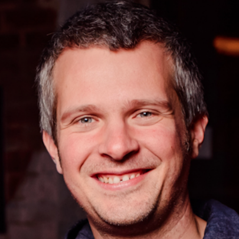

The Light Bringer
A poetic reflection on progress, optimism, power, and what may be lost as we accelerate.
I build technology and lead teams. I write to understand—from software, data, and organizations to judgment, progress, and the human questions underneath.

Alexandru GrisA poetic reflection on progress, optimism, power, and what may be lost as we accelerate.
Open disagreement, intellectual curiosity, depth of understanding, and honest learning.
A practical experiment in forecasting, written to learn by building.
I have spent my career building software, products, and teams across countries and industries. This is where I keep the ideas that survive the work: technical experiments, leadership lessons, unfinished questions, and occasional reflections on being human.